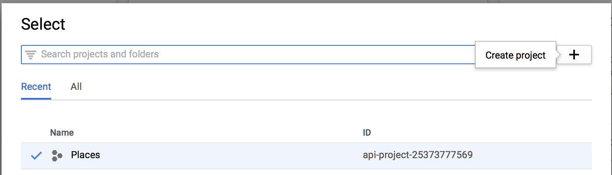
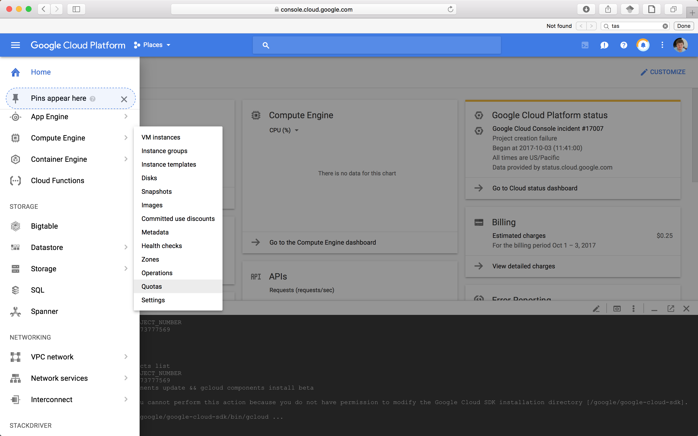
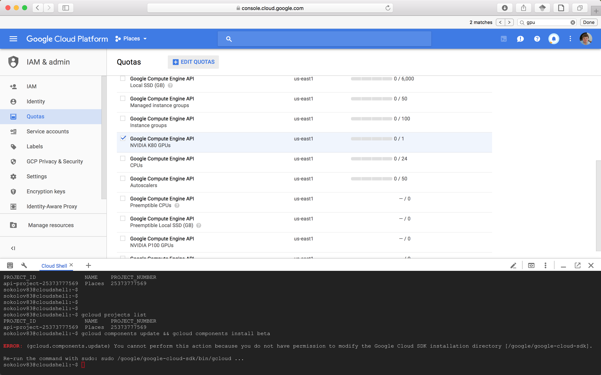
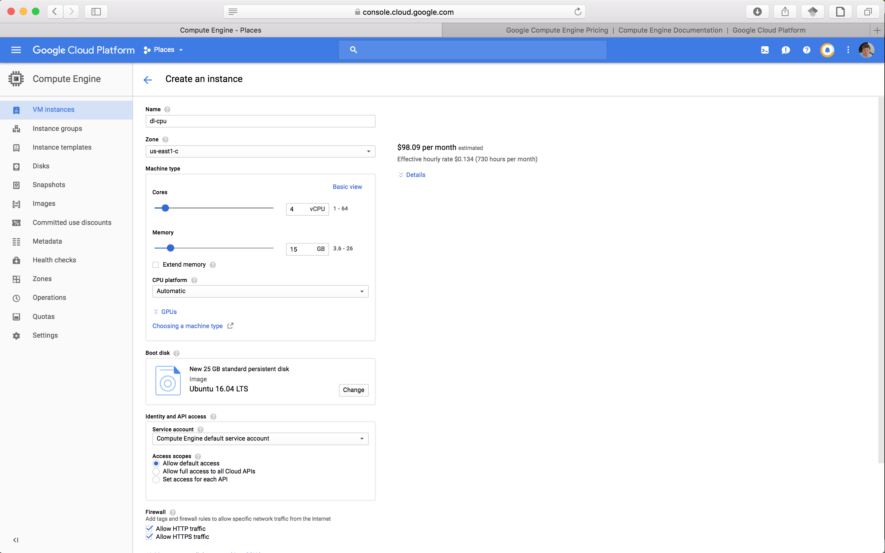
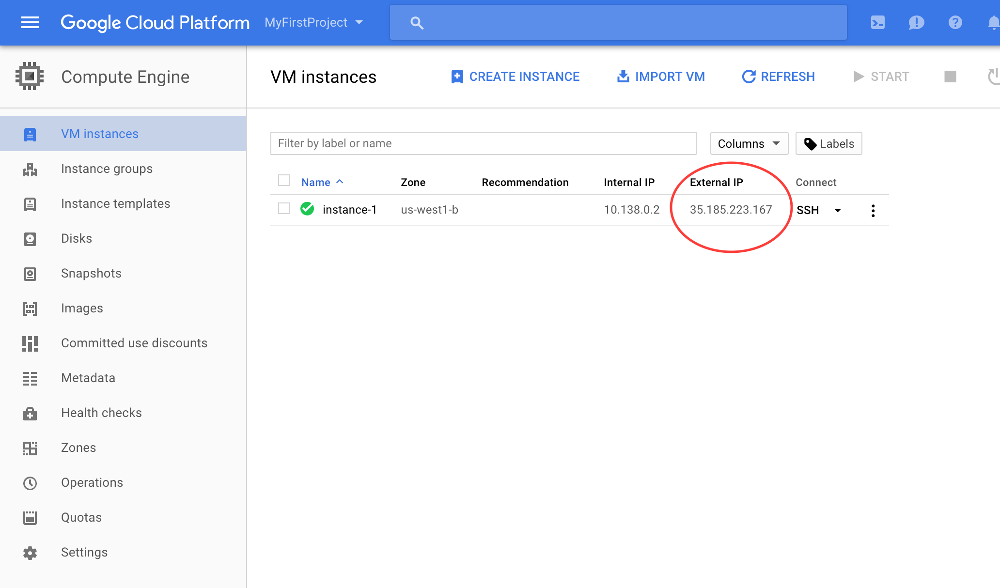
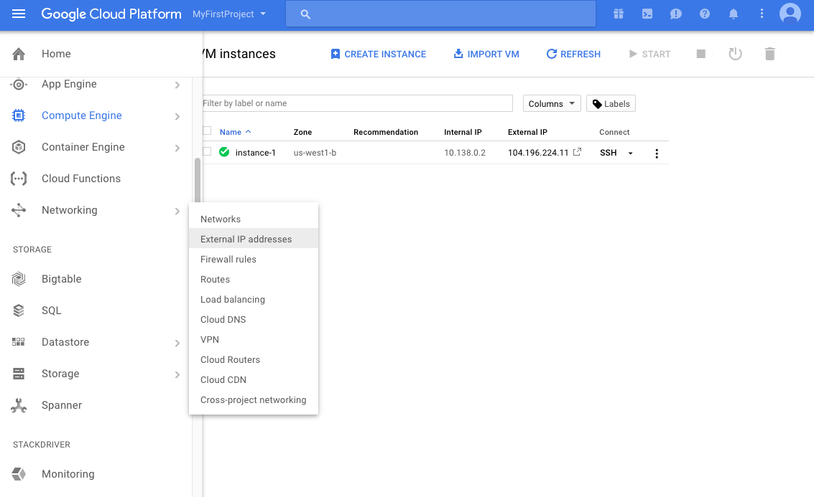
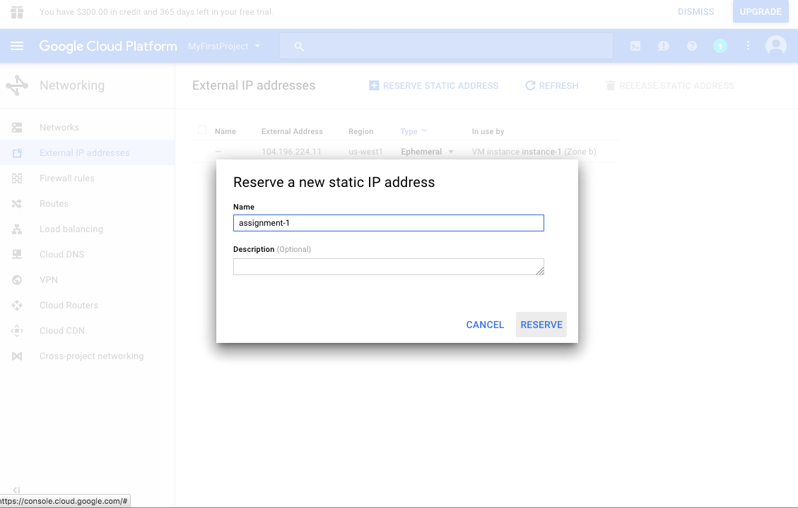
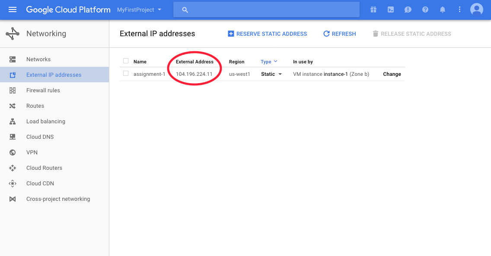
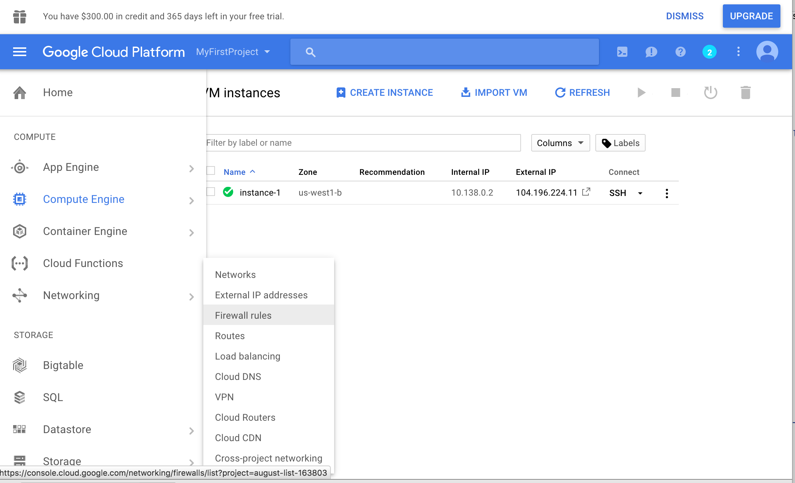
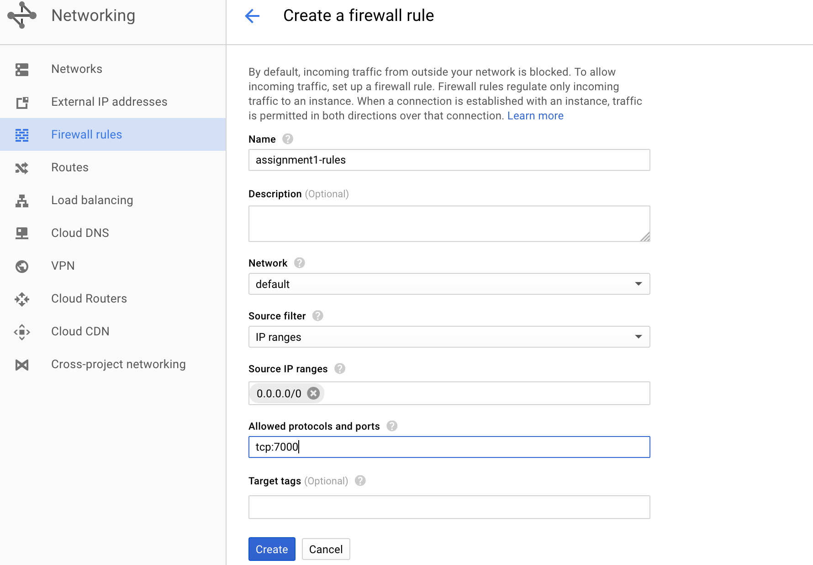

Here is the URL you will need to access in order to request a Google Cloud Platform coupon. You will be asked to provide your school email address and name. An email will be sent to you to confirm these details before a coupon is sent to you.
You will be asked for a name and email address, which needs to match the domain. A confirmation email will be sent to you with a coupon code.
You can request a coupon from the URL and redeem it until: 1/4/2018
Coupon valid through: 9/4/2018
You can only request ONE code per unique email address.
Please contact me if you have any questions or issues.
Once you redeemed the coupon go to the Google cloud console.
Click on the top of the screen to select list of projects and click on + to create a new project.
|
 |
I typically use Cloud Shel, which you can start by clicking on the terminal icon on the top right corner. You can also install gcloud on your local machine as described here.
Ask to increase you quota on GPUs, it is 0 be default. Go to Compute Engine -> Quotas
|
 |
And check the Google Compute Engine API NVIDIA K80 GPUs for us-east1 region, then click Edit Quotas on the top
|
 |
Now create a virtual machine by clicking Compute Engine -> VM Instances.
Make sure you choose zone us-east1-c.
|
 |
Using the gcloud command
gcloud beta compute instances create dl-gpu \ --machine-type n1-standard-2 --zone us-east1-c --accelerator \ type=nvidia-tesla-k80,count=1 --image-family ubuntu-1604-lts --image-project \ ubuntu-os-cloud --boot-disk-size 50GB --maintenance-policy TERMINATE \ --restart-on-failure
ssh to your newly created machine by
gcloud compute ssh dl-gpu --zone us-east1-c
Install CUDA libraries by running the following script (with sudo)
#!/bin/bash echo "Checking for CUDA and installing." # Check for CUDA and try to install. if ! dpkg-query -W cuda-8-0; then # The 16.04 installer works with 16.10. curl -O http://developer.download.nvidia.com/compute/cuda/repos/ubuntu1604/x86_64/cuda-repo-ubuntu1604_8.0.61-1_amd64.deb dpkg -i ./cuda-repo-ubuntu1604_8.0.61-1_amd64.deb apt-get update apt-get install cuda-8-0 -y fi
Verify coda installation
nvidia-smi
Install Anaconda
#https://www.digitalocean.com/community/tutorials/how-to-install-the-anaconda-python-distribution-on-ubuntu-16-04 curl -O https://repo.continuum.io/archive/Anaconda2-5.0.0.1-Linux-x86_64.sh bash Anaconda2-5.0.0.1-Linux-x86_64.sh source ~/.bashrc
Install pytorch
conda install pytorch torchvision cuda80 -c soumith
Verify that pytroch has access to cuda
sokolov83@dl-gpu:~$ python Python 2.7.13 |Anaconda, Inc.| (default, Sep 30 2017, 18:12:43) [GCC 7.2.0] on linux2 Type "help", "copyright", "credits" or "license" for more information. >>> import torch >>> torch.cuda.is_available() True
Repeat the steps to create a CPU machine
gcloud beta compute instances create dl-cpu --machine-type n1-standard-2 --zone us-east1-c --image-family ubuntu-1604-lts --image-project ubuntu-os-cloud --boot-disk-size 50GB --maintenance-policy TERMINATE --restart-on-failure
Then start the instance and ssh to the it
gcloud compute ssh dl-cpu --zone us-east1-c
Many of the assignments will involve using Jupyter Notebook. Below, we discuss how to run Jupyter Notebook from your GCE instance and use it on your local browser.
Change the Extenal IP address of your GCE instance to be static (see screenshot below).
|
 |
To Do this, click on the 3 line icon next to the Google Cloud Platform button on the top left corner of your screen, go to Networking and External IP addresses (see screenshot below).
|
 |
To have a static IP address, change Type from Ephemeral to Static. Enter your preffered name for your static IP, mine is assignment-1 (see screenshot below). And click on Reserve. Remember to release the static IP address when you are done because according to this page Google charges a small fee for unused static IPs. Type should now be set to Static.
|
 |
Take note of your Static IP address (circled on the screenshot below). I used 104.196.224.11 for this tutorial.
|
 |
One last thing you have to do is adding a new firewall rule allowing TCP acess to a particular <PORT-NUMBER>. I usually use 7000 or 8000 for <PORT-NUMBER>. Click on the 3 line icon at the top of the page next to Google Cloud Platform. On the menu that pops up on the left column, go to Networking and Firewall rules (see the screenshot below).
|
 |
Click on the blue CREATE FIREWALL RULE button. Enter whatever name you want: I used assignment1-rules. Enter 0.0.0.0/0 for Source IP ranges and tcp:<PORT-NUMBER> for Allowed protocols and ports where <PORT-NUMBER> is the number you used above. Click on the blue Create button. See the screen shot below.
|
 |
NOTE: Some people are seeing a different screen where instead of Allowed protocols and ports there is a field titled Specified protocols and ports. You should enter tcp:<PORT-NUMBER> for this field if this is the page you see. Also, if you see a field titled Targets select All instances in the network.
The following instructions are excerpts from this page that has more detailed instructions.
On your GCE instance check where the Jupyter configuration file is located:
ls ~/.jupyter/jupyter_notebook_config.py
Mine was in hometimnitgebru.jupyterjupyternotebookconfig.py
If it doesn’t exist, create one:
# Remember to activate your virtualenv ('source .env/bin/activate') so you can actually run jupyter :)
jupyter notebook --generate-config
Using your favorite editor (vim, emacs etc…) add the following lines to the config file, (e.g.: hometimnitgebru.jupyterjupyternotebookconfig.py):
c = get_config() c.NotebookApp.ip = '*' c.NotebookApp.open_browser = False c.NotebookApp.port = <PORT-NUMBER>
Where <PORT-NUMBER> is the same number you used in the prior section. Save your changes and close the file